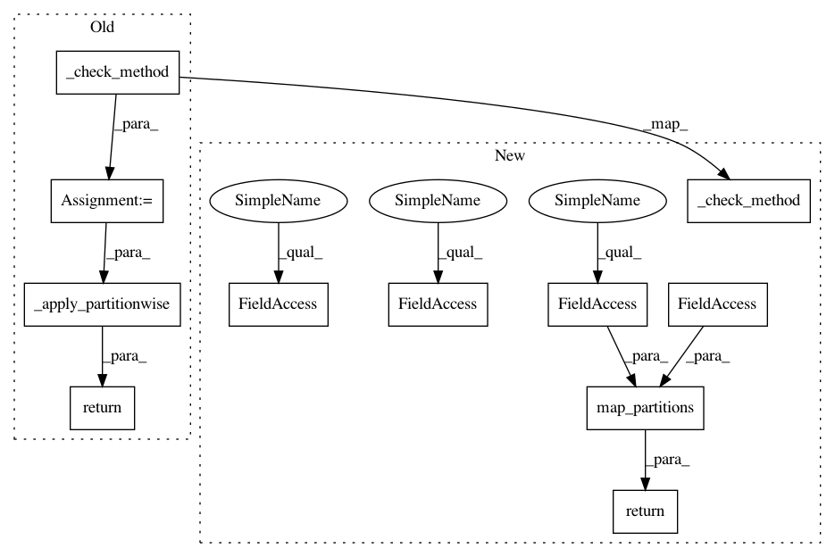

811554e63022cc746fd1b0b7aa2ef5ef7a02f376,dask_ml/wrappers.py,ParallelPostFit,predict_proba,#ParallelPostFit#Any#,282
Before Change
X = self._check_array(X)
predict_proba = self._check_method("predict_proba")
if isinstance(X, da.Array):
// XXX: multiclass
return X.map_blocks(
predict_proba, dtype="float", chunks=(X.chunks[0], len(self.classes_))
)
elif isinstance(X, dd._Frame):
return _apply_partitionwise(X, predict_proba)
else:
return predict_proba(X)
def _check_method(self, method):
After Change
X = self._check_array(X)
self._check_method("predict_proba")
if isinstance(X, da.Array):
// XXX: multiclass
return X.map_blocks(
_predict_proba,
estimator=self._postfit_estimator,
dtype="float",
chunks=(X.chunks[0], len(self.classes_)),
)
elif isinstance(X, dd._Frame):
return X.map_partitions(_predict_proba, estimator=self._postfit_estimator)
else:
return _predict_proba(X, estimator=self._postfit_estimator)
def _check_method(self, method):
Check if self.estimator has "method".
In pattern: SUPERPATTERN
Frequency: 3
Non-data size: 11
Instances
Project Name: dask/dask-ml
Commit Name: 811554e63022cc746fd1b0b7aa2ef5ef7a02f376
Time: 2018-10-12
Author: mrocklin@gmail.com
File Name: dask_ml/wrappers.py
Class Name: ParallelPostFit
Method Name: predict_proba
Project Name: dask/dask-ml
Commit Name: 811554e63022cc746fd1b0b7aa2ef5ef7a02f376
Time: 2018-10-12
Author: mrocklin@gmail.com
File Name: dask_ml/wrappers.py
Class Name: ParallelPostFit
Method Name: transform
Project Name: dask/dask-ml
Commit Name: 811554e63022cc746fd1b0b7aa2ef5ef7a02f376
Time: 2018-10-12
Author: mrocklin@gmail.com
File Name: dask_ml/wrappers.py
Class Name: ParallelPostFit
Method Name: predict
Project Name: dask/dask-ml
Commit Name: 811554e63022cc746fd1b0b7aa2ef5ef7a02f376
Time: 2018-10-12
Author: mrocklin@gmail.com
File Name: dask_ml/wrappers.py
Class Name: ParallelPostFit
Method Name: predict_proba